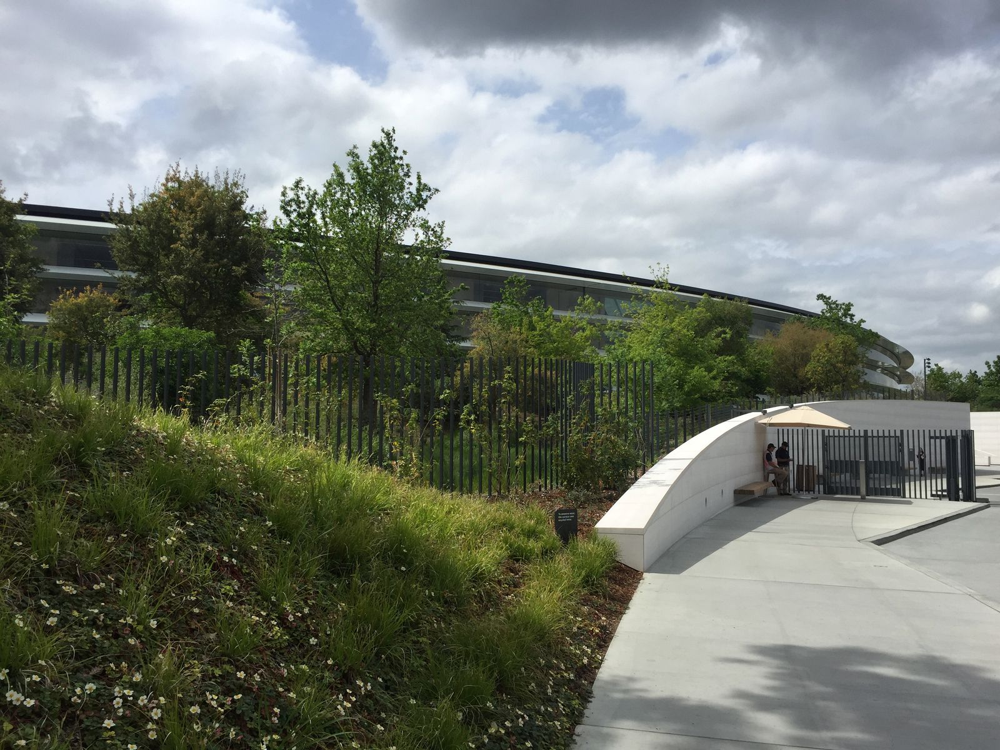
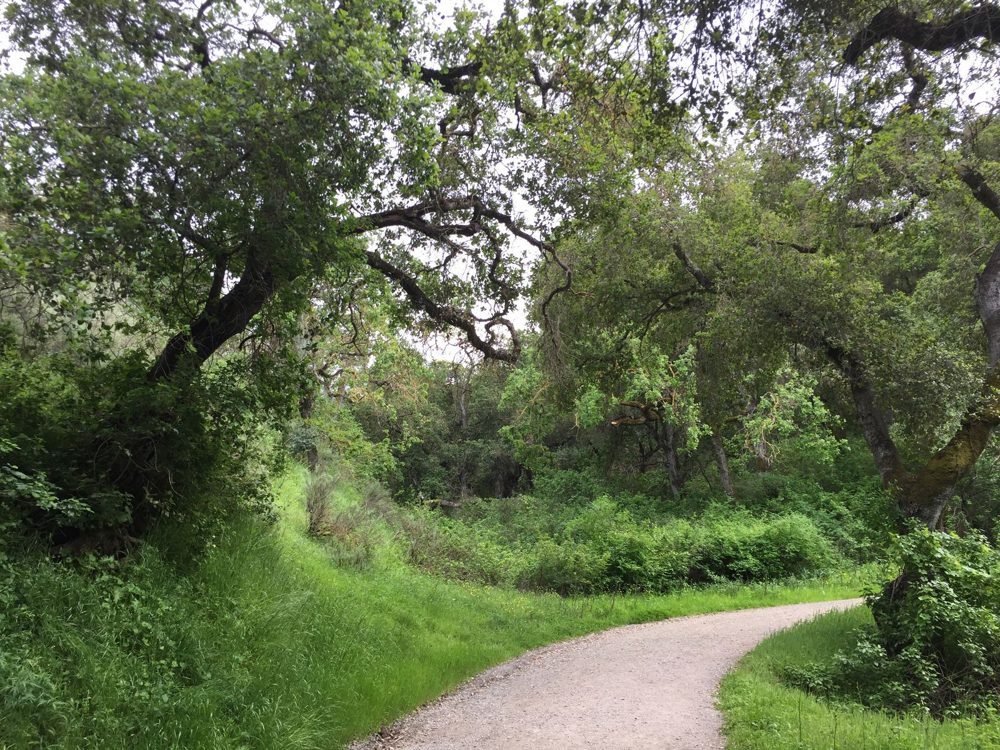
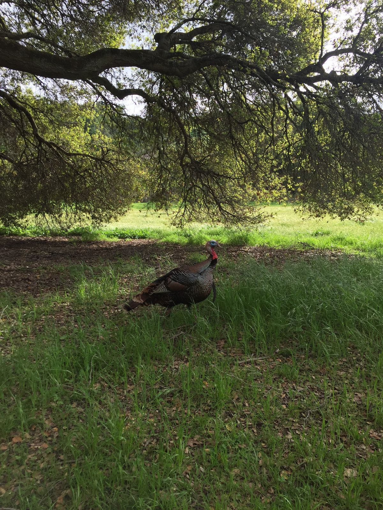
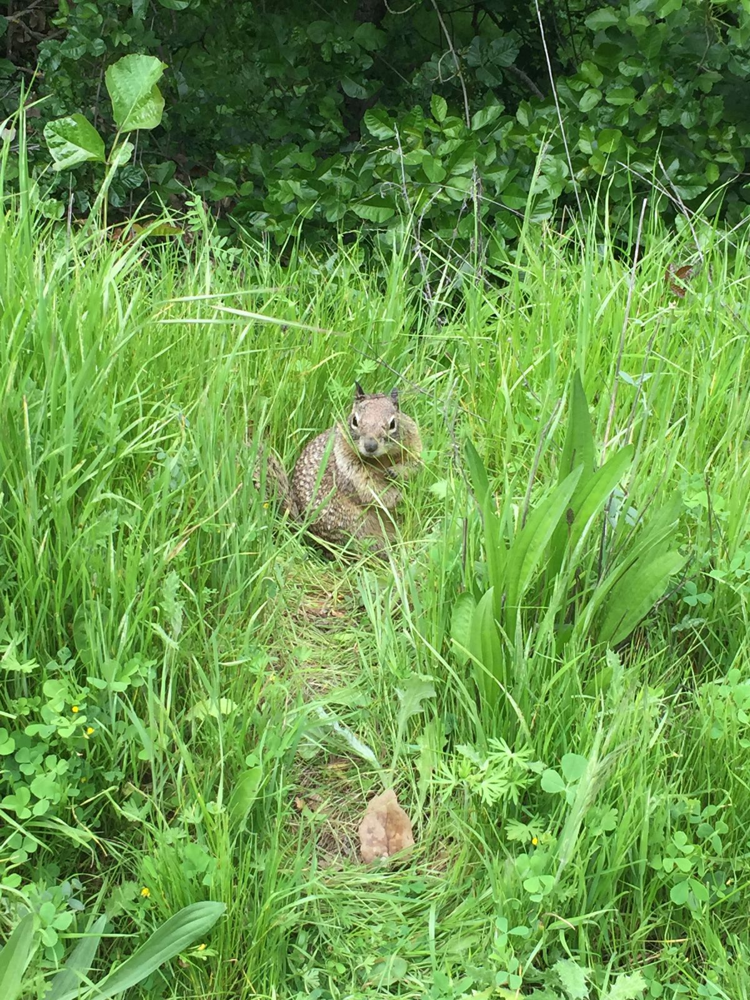
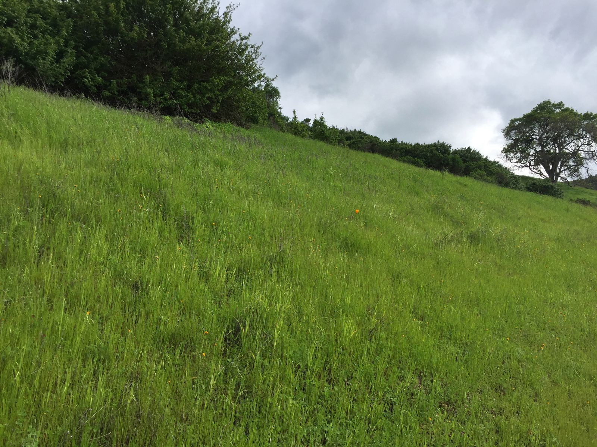

Double Park Afternoon
I spent my afternoon in two parks. First, I stopped by Apple Park in Cupertino, home of the Ring Building, otherwise known as the mothership. In the visitor center, there is a large scale model of the campus, made out of solid machined aluminum with an anodize finish. Employees handed out iPads with an AR app, showing what's in each building, how it looks at any time of day, and how the cooling and electrical systems work. It was pretty neat. I got a cappuccino at Caffe Macs and wandered around for a bit. There's not too much to see if you're not an employee, but the campus is beautiful, full of trees, flowers, and other things green.

In a fanboy fashion, I shelled out $25 for an Apple Park tote bag. The bag came in a box that made it look like any Apple product 10x - 100x the price. The employee taking my payment asked me if I wanted a bag for $0.10. I explained, no...I'm buying a bag already, but he failed to understand the irony.

Next, I departed for Rancho San Antonio Preserve, just west of Cupertino in Los Altos. As is growing more common, there are signs for mountain lions, though these signs provided more information about what to do if confronted. I didn't see any mountain lions, but I did see lots of wildlife.

On my roughly one mile hike up and around, I encountered birds of prey, beetles, and a hare. There were many squirrels, with plenty to eat and no fear of humans. I sent a picture to one of my nature-loving friends who identified it as a California roundboi. I also saw about two dozen turkeys, some of which were in a group running together on the path. Again I realized the limitation of my iPhone 6 camera in taking wildlife photos, but I managed a few okay shots since these birds and squirrels were so unafraid of me.

I'm not sure if the preserve always looks this way, but it was vividly green with lots of flowers. Some areas were wide open grasses with picnic tables and large paths for runners. Other areas were surrounded by trees, with narrow, less-traveled paths. I could have gone for a longer hike, but I instead decided to sit and read for a while.

Soon, I depart for dinner with a college friend whom I haven't seen since graduation. Then I'm off to Oakland.